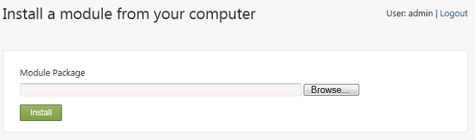
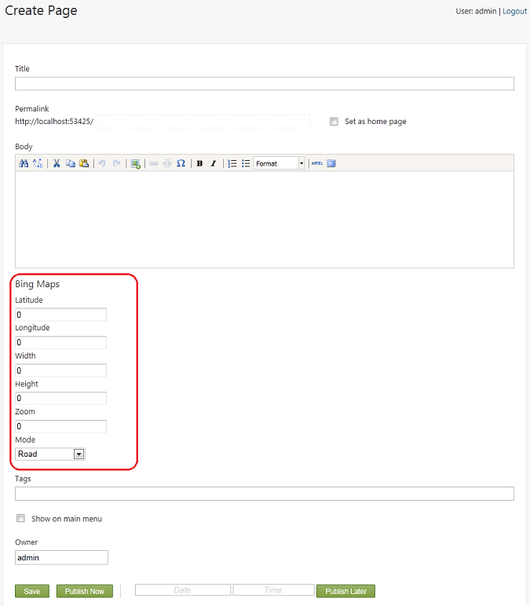
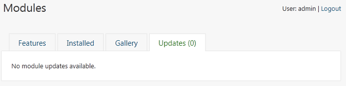

Orchard is a modular web-based CMS, designed to be extended easily by installing additional modules and enabling module features. A module is a package that can be installed and uninstalled. A package consists of a ZIP file in the .nupkg file format.) A feature is a behavior that's exposed by an installed module that you can individually enable or disable.
This topic shows you how to install or download modules from the online gallery, how to install a module from your local computer, and how to work with the features of an installed module. It also shows you how to update installed modules.
Note If your site is running under IIS, make sure you have granted read/write permissions to the ~/Themes folder under the root of your site for the service account that is being used as the IIS application pool identity. However, you should remove the write permissions on a production server.
Viewing Installed Modules
To view the modules that have been installed for your site, click Modules on the dashboard, and then in the Modules screen, click the Installed tab.

The Installed tab displays a list of the modules that are included with Orchard, along with properties of each module such as version, author, a description, and a list of features. It also provides a link that you can use to upload and install a module package.
You can add modules to Orchard in two ways. The first and easiest is to install a module from the online gallery. The second is to upload a module package from your local computer and install it in your site. If you simply want to use an existing module in your Orchard site, you can install the module directly from the gallery to your site. If you want to modify a module package, or if you want to upload it to multiple Orchard sites, you will probably want to download the module from the gallery to your local computer.
Installing a Module from the Gallery
When you install a module, its package file is downloaded from the gallery, and the source files are extracted from the package and added to your site. After you install a module, its features are available for use.
To install a module from the gallery, click Modules on the dashboard, then click the Gallery tab. The Gallery tab displays a list of available online modules from the gallery feed (or feeds) registered for your site.

The gallery displays the aggregated list of modules exposed by all registered feeds. You can also use the Feed drop-down list in the Gallery tab to display all feeds or to filter and display only the modules from a particular feed.
To install a module, click the Install link for the module. This topic uses the Bing.Maps module as an example.

After the module has been installed, Orchard prompts you to enable features in the module. Select the features you want to enable and then click OK.

When you return to the Installed tab, you can see the module that you just installed.
Downloading a Module from the Gallery
At times you may want to simply download a module package to your computer rather than installing it in a site. To download a module, return to the Gallery tab and click Download for a specific module. (For example, download the Contact Form module.) The download process lets you save the .nupkg file that contains the module contents to your local machine. You can then optionally modify the module, or install it in an Orchard site.

Installing a Module from your Local Computer
To install a module from your local computer to an Orchard site, go to the Modules > Installed tab and then click the link to Install a module from your computer.

Browse to the local module (a .nupkg file), select it, and then click Install. This installs the module package to your site the same way that clicking Install does for an online module in the gallery.

Working with Module Features
When you install a module in an Orchard site, the module contains one or more features. You can enable or disable each feature individually, either when you first install the module, or later. The Bing.Maps module used as an example in the previous section contains a single feature, also called Bing.Maps. (Remember that a module can have one or many features, and that the features do not have to have the same name as their parent module.) In this section, you'll see how to enable or disable an individual feature (the Bing.Maps feature), and how to add that feature to a content type, such as a page.
Begin by observing how to enable or disable the Bing.Maps feature. To do this, go to the Modules > Features tab, find the Bing.Maps feature. Note that it is enabled, and that you can disable it by clicking a Disable link on the feature. If the feature is disabled, then an Enable link appears for enabling the feature. Leave the feature enabled for this tutorial.

Now you can add a new content part (a Bing Map part, which is included in the disabled Bing.Maps feature) to the page content type. On the dashboard, click Content, and then click the Content Types tab. Find the Page content type, and then click Edit next to the type. In the Edit Content Type screen, click Add Parts in the Parts section. The Add Parts to Page screen is displayed.

Select the Bing Map content part from the list of available parts, and then save the updated page content type.
Now you can see the effect of adding the Bing Maps content part to the page type. On the dashboard in the New menu, click Page to create a new page. Because you installed the Bing Maps module, enabled the feature, and added the Bing Map content part to the page, when you create a new page instance, a number of map-related fields appear.

Updating an Installed Module
Occasionally modules will be updated with fixes or new features. You can update an installed module by clicking Modules on the dashboard and then clicking the Updates tab. If there are no updates available for your installed modules, the Updates tab is empty. If there are updates available, you can install or download the updates the same way that you installed the module originally.

Change History
- Updated for Orchard 1.1
- 3-23-11: Reordered sections of the topic, added new section on enabling and disabling features, plus another section on updating a module. Updated screens and text in existing sections.